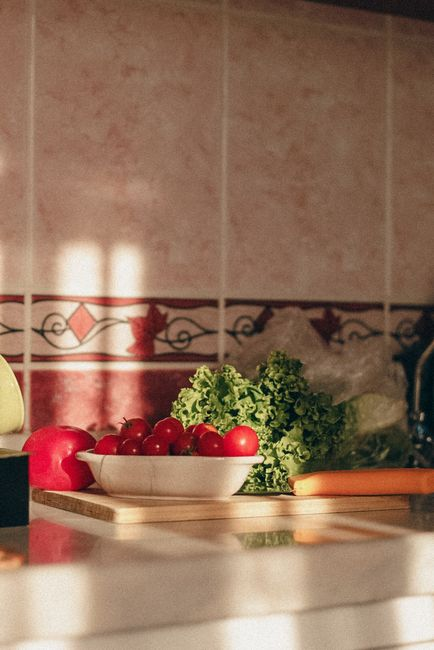
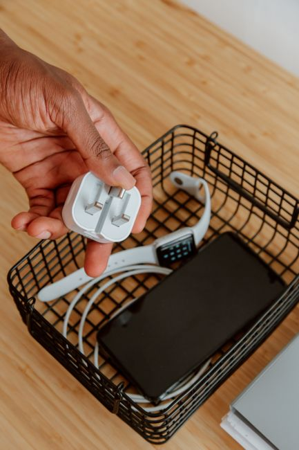

The habit that finally stuck this year had nothing to do with resolve. It had everything to do with where I put my water glass.
For three decades I have kept a paper journal of what I actually did each day, not what I meant to do. For most of that time I read every gap in it as a character problem. Not enough discipline. Not enough will. Then I went back through years of pages looking for a pattern and found one that had nothing to do with character at all. The habits that lasted were never the ones I wanted most. They were the ones already sitting in my hand.
That single observation rearranged how I think about change.
You already know the frustration. You decide to drink more water, read more, put the phone down after nine. You mean it completely in the moment you decide it. Then the moment passes and the old pattern reasserts itself, quietly, before you notice you chose anything at all.
The problem was never the decision. The problem was that I kept expecting one moment of resolve to outvote a room full of cues I had never once looked at on purpose.
So I stopped treating my space as a neutral container and started treating it as the actual mechanism doing the work.
Why Your Room Decides Before You Do
This is not a metaphor. It is closer to biology.
1. The brain is trying to save energy, not test your character
The prefrontal cortex, the part of the brain responsible for conscious decision making, uses an enormous amount of energy to run. Left alone, the brain looks for every chance to offload a decision onto a system that runs automatically instead. A habit is exactly that kind of system. It is a behavior the brain has automated so the prefrontal cortex does not have to stay involved. And the trigger for that automated behavior was never willpower. It was whatever cue happened to be sitting in front of you.
I used to file every slip under a failure of effort. Reading back through years of journal pages, most of them were failures of placement.
2. The room remembers even when you do not
The brain encodes a behavior together with the environment where it happened. This is why you might want popcorn walking into a movie theater even when you are not hungry, or feel sleepy the moment you sit on your living room couch but alert the second you walk into a coffee shop. One study out of the University of Southern California found that about 43 percent of daily behaviors happen in the same location almost every time. The room is not a passive backdrop. It casts a vote, and it casts it before your willpower is ever consulted.
The Only Two Rules I Actually Use
Once that pattern showed up in my own tracking, I stopped trying to invent new discipline and started applying two rules to every room I spend real time in.
Make the good habit obvious
The less searching or deciding a habit requires, the more likely it happens. So I stopped hiding the things I actually want to do.
- My journal sits on my pillow, not in a drawer.
- My supplements sit next to the coffee maker, not in the cabinet above it.
- My walking shoes sit by the door I actually use, not the one I do not.
Make the unwanted habit invisible
The opposite rule works just as well. Remove or hide the cue and the behavior it triggers tends to go quiet on its own.
- Phone in another room during any focus block.
- Nothing sweet stored anywhere in the kitchen. If I want it, I have to leave the house to get it.
- Unsubscribed from every list that used to trigger a purchase I had not planned to make.
Clutter does something quieter too. Researchers studying home environments have linked cluttered spaces to higher cortisol. Visual noise appears to keep the nervous system in the same activated state that stress produces, and that state works against forming anything new. An organized, calm room seems to support the opposite state, the one where new habits actually get encoded. Clearing a surface was never really about tidiness. It was about giving a new habit a nervous system quiet enough to take hold in.
What My Kitchen Taught My Desk
Years before I tracked a single habit, I learned to cook the way most kitchens teach it. Everything in its place before anything gets cut. I did not realize until much later that the same idea would end up reorganizing the rest of my life.

One space, one use
A couch used for a show and also for reading builds a weak cue for either. Choose one chair and let it do one thing. In my own house that chair exists for sitting practice and nothing else. My body knows, before my mind has caught up, exactly what happens the moment I sit down in it.
The evening reset
Every night I spend about five minutes doing tomorrow's thinking so tomorrow does not have to. Clothes out. Coffee measured. Supplements set beside it. Journal open to a blank page. I once walked through the first thirty minutes of an ordinary morning and counted every point where I had to decide something. There were eleven of them before I had even made coffee. Most of those eleven are decided the night before now, and the small ritual that does it takes less time than brushing my teeth.
Where My Willpower Kept Losing
The phone was the one place none of this seemed to work, until I understood what it was actually doing.
The loop I never noticed
Every habit, including the ones I never meant to build, runs on the same small loop. A cue triggers the brain to predict what happens next. That prediction produces a craving, the pull toward whatever the cue promised. The craving drives a response, the actual action taken. And the response earns a reward, which is what makes the brain want to run the whole loop again. A notification is a cue. The pull to check it is the craving. Picking up the phone is the response. Whatever small hit of information or connection follows is the reward. If the reward were not satisfying, none of us would still be doing this.
Moving the charger
I noticed the pattern in my own journal before I understood why it was happening. Mornings where I picked up my phone within the first five minutes were mornings that started scattered, and stayed that way. So I moved the charger out of the bedroom entirely. The cue was gone before I woke up, which meant there was nothing left to resist. That is the part nobody tells you about willpower. It is far easier to not resist something than it is to resist it well.

The phone stays in another room now during a short list of things I decided mattered more than being reachable.
- The first hour of the morning.
- Meals with anyone I live with or am visiting.
- Any conversation that actually matters.
- The last hour before sleep.
What People Ask Me About This
Does this mean willpower does not matter at all?
No. Willpower still matters once, at the moment you actually move the object. It does not have to matter every single day after that, which is the entire point. You are not trying to win the same argument with yourself every morning for the rest of your life.
What if the space is not fully mine to control?
Control what is actually yours. One chair. One shelf. One side of a counter. A small physical cue, like a particular light turned on or a particular kind of music, can still mark the switch between roles even inside a space you share with other people.
How long before it actually sticks?
Most changes show themselves within the first week or two. But I do not call anything finished on this site until it has survived at least one genuinely bad week, which is why I hold every redesign for ninety days before I trust it enough to write about it. Ninety days is not a magic number. It is just long enough for a bad week to show up and test the thing honestly.
None of this ever asked me to want the habit more. It asked me to stop pretending my space was neutral. It never was. It was always shaping what I did next, whether I noticed it or not. The only real choice left was whether I designed it on purpose.